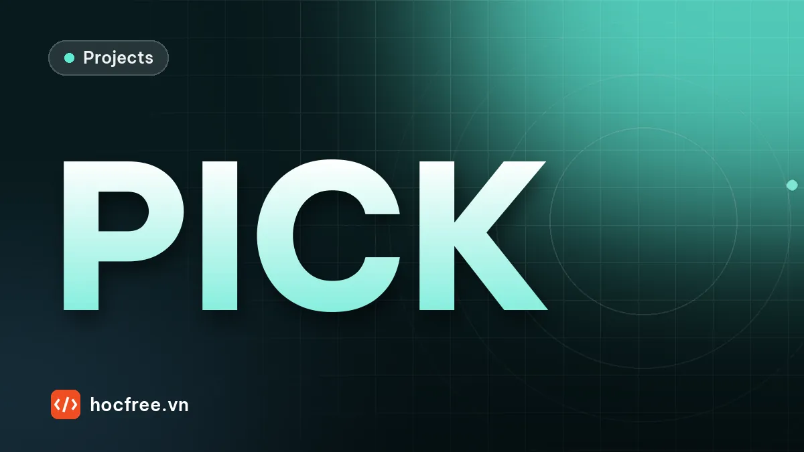

Dự án: robot gắp vật trên băng tải đang chạy, bù encoder và độ trễ
Đổi vị trí ảnh sang tọa độ băng tải đúng lúc phơi sáng, chống gắp trùng, tách vật chạm nhau khi chắc chắn, kiểm khoảng trống ngón kẹp: đo từng bước.

Nội dung bài viết
Độ khó: ★★★★ (rất khó) · Cần học trước: chặng 8: Calibration, chặng 10: PLC / Robot / MES · Thời lượng: khoảng 3 giờ
Robot gắp vật từ băng tải đang chạy (conveyor tracking) là bài toán vision dẫn hướng robot phổ biến nhất trong đóng gói, phân loại, cấp phôi. Phần nhận dạng vị trí vật trên ảnh thường không khó; robot gắp hụt, gắp trùng hay đâm vào vật bên cạnh hầu như luôn vì những thứ nằm ngoài ảnh: vật đã chạy đi bao xa từ lúc chụp tới lúc robot hạ xuống, camera thật sự phơi sáng lúc nào, một vật xuất hiện ở hai khung hình liên tiếp, và ngón kẹp có chỗ để chen vào hay không. Dự án này mô phỏng cả dây chuyền và đo đóng góp của từng bước.
1. Bài toán
"Tế bào robot delta gắp chi tiết nhựa 40 × 20 mm từ băng tải vào khay. Tốc độ băng tải thay đổi theo nhịp máy ép phía trước (0,2 đến 0,4 m/s). Robot hay gắp hụt khi băng chạy nhanh, thỉnh thoảng hạ xuống hai lần cùng một chỗ, và đã gãy hai bộ ngón kẹp vì đâm vào chi tiết nằm sát bên."
| Đại lượng | Giá trị |
|---|---|
| Camera | nhìn 400 × 300 mm băng tải, 0,5 mm/pixel; kích chụp mỗi khi băng chạy 300 mm (chồng lấn 100 mm) |
| Độ trễ camera | 15 ms từ lúc kích tới giữa thời gian phơi sáng |
| Robot | gắp ở vị trí cách mép vào vùng nhìn 900 mm, bám băng tải theo encoder |
| Ngón kẹp | song song, kẹp theo cạnh ngắn; mỗi ngón 10 × 8 mm, cách tâm 16 mm |
| Dung sai gắp | lệch tâm ≤ 2 mm, lệch góc ≤ 5° |
| Mục tiêu | 0 gắp lệch, 0 gắp trùng, 0 va chạm; vật không gắp an toàn thì cho đi quay vòng |
2. Yêu cầu
- Tọa độ vật được tính theo băng tải (mm encoder), không theo thời gian.
- Mỗi vật chỉ có một lệnh gắp, dù xuất hiện trong hai khung hình.
- Không đoán khi hai vật chạm nhau mà không tách được; không gắp khi ngón kẹp có thể chạm vật khác.
- Mỗi kết cục (gắp đúng, lệch, va chạm, bỏ qua) được đếm để theo dõi.
3. Kiến thức sử dụng
- Vision dẫn hướng robot gắp vật và hand-eye calibration: ở đây coi như đã hiệu chuẩn, mọi tọa độ tính bằng mm trên băng.
- Trigger và encoder; dự án loại chai theo encoder (cùng ý tưởng theo dõi vị trí).
- Tách vật dính nhau, morphology.
4. Dữ liệu: băng tải, vật và camera mô phỏng
Vật được rải trên băng với tọa độ băng X (mm), vị trí ngang y và góc; khoảng 15% đi thành cặp nằm sát cạnh dài, khe 0,3 đến 3 mm. Băng tải đổi tốc độ liên tục. Một vật có tọa độ X nằm ở vị trí \(s = B - X\) tính từ mép vào vùng nhìn, với \(B\) là quãng băng đã chạy (giá trị encoder đổi ra mm).
import cv2
import numpy as np
MM_PX = 0.5 # camera nhìn 400 × 300 mm băng tải, 0,5 mm/pixel
W, H = 800, 600
VAT = (40.0, 20.0) # chi tiết chữ nhật 40 × 20 mm
BUOC_CHUP = 300.0 # chụp mỗi khi băng tải chạy 300 mm (vùng nhìn dài 400 mm: chồng lấn 100 mm)
TRE_PHOI_SANG = 0.015 # từ lúc kích tới giữa thời gian phơi sáng: 15 ms (độ trễ camera)
VI_TRI_ROBOT = 900.0 # robot gắp tại vị trí cách mép trước vùng nhìn 900 mm theo chiều chạy
def tao_vat(rng, so=300):
"""Vật rải ngẫu nhiên trên băng: X dọc băng (mm, tọa độ băng), Y ngang băng, góc. Khoảng 15% đi thành cặp chạm nhau."""
vat, X = [], 0.0
while len(vat) < so:
X += rng.uniform(50, 110) # vật đơn không chạm nhau
y, g = rng.uniform(40, 260), rng.uniform(0, 180)
vat.append([X, y, g])
if rng.random() < 0.15: # vật thứ hai nằm sát cạnh dài của vật trước
r = np.radians(g + 90)
kc = rng.uniform(20.3, 23.0) # khe giữa hai vật 0,3–3 mm
vat.append([X - kc * np.cos(r), y + kc * np.sin(r), g + rng.normal(0, 1)]) # trục X băng ngược trục x ảnh
return np.array(vat)
def toc_do_bang(t):
"""Băng tải đổi tốc độ theo nhịp máy phía trước: 0,2–0,4 m/s (mm/s)."""
return 300 + 100 * np.sin(t / 1.7) * np.sign(np.sin(t / 5.3))
def chay_bang(thoi_gian=30.0, dt=0.0005):
t = np.arange(0, thoi_gian, dt)
return t, np.cumsum(toc_do_bang(t)) * dt # vị trí băng tải (mm) theo thời gian
def chup(vat, vi_tri_bang):
"""Ảnh đã nhị phân hóa (vật sáng trên băng tối) khi băng tải ở vi_tri_bang.
Vật có tọa độ băng X nằm ở vị trí s = vi_tri_bang − X (mm) tính từ mép vào vùng nhìn; vùng nhìn là s ∈ [0, 400]."""
anh = np.zeros((H, W), np.uint8)
for X, y, g in vat:
x_anh = (vi_tri_bang - X) / MM_PX
if -60 < x_anh < W + 60:
hop = cv2.boxPoints(((x_anh, y / MM_PX), (VAT[0] / MM_PX, VAT[1] / MM_PX), g))
cv2.fillPoly(anh, [np.round(hop).astype(np.int32)], 255)
return anh
rng = np.random.default_rng(0)
vat = tao_vat(rng)
t, vt = chay_bang()
print(f"{len(vat)} vật, băng chạy {vt[-1] / 1000:.1f} m trong {t[-1]:.0f} s, tốc độ {toc_do_bang(t).min():.0f}–{toc_do_bang(t).max():.0f} mm/s")
cv2.imwrite("bang.png", chup(vat, 1500))301 vật, băng chạy 9.5 m trong 30 s, tốc độ 200–400 mm/sẢnh mô phỏng là ảnh đã nhị phân hóa (vật sáng trên băng tối) để tập trung vào phần dẫn hướng; phần tách vật khỏi nền đã có ở các bài xử lý ảnh. File bang.png là một khung hình.
5. Nhận dạng vị trí, góc, và vật chạm nhau
Mỗi blob nằm trọn trong ảnh cho một vị trí (tâm minAreaRect) và góc theo cạnh dài, trong khoảng [0°, 180°) vì vật đối xứng. Blob có diện tích bằng hai hay ba vật được thử tách bằng cách co mặt nạ (erode): nếu số mảnh sau khi co đúng bằng số vật thì dùng từng mảnh; nếu không, trạng thái là "chạm, không tách được" và robot sẽ bỏ qua.
DT_MOT_VAT = VAT[0] * VAT[1] / MM_PX ** 2 # diện tích một vật (pixel)
def nhan_dang(anh, tach_cham=True):
"""Trả về danh sách (s mm, y mm, góc độ, trạng thái) của vật nằm trọn trong ảnh.
Blob lớn hơn một vật: tach_cham=True thì co mặt nạ để tách vật chỉ chạm nhẹ; không tách được thì trạng thái
'chạm, không tách được' (robot bỏ qua, vật đi quay vòng). tach_cham=False: coi mỗi blob là một vật."""
n, nhan, st, _ = cv2.connectedComponentsWithStats(anh)
kq = []
for k in range(1, n):
x0, y0, w, h, dt = st[k]
if x0 == 0 or x0 + w >= W: # vật chạm mép ảnh: chờ khung sau
continue
mat_na = (nhan == k).astype(np.uint8)
so = int(round(dt / DT_MOT_VAT))
cum = [mat_na]
if tach_cham and so >= 2:
co = cv2.erode(mat_na, np.ones((3, 3), np.uint8), iterations=3)
m, nhan_co = cv2.connectedComponents(co)
if m - 1 == so:
cum = [(nhan_co == j).astype(np.uint8) for j in range(1, m)]
else:
c = cv2.minAreaRect(np.column_stack(np.nonzero(mat_na))[:, ::-1].astype(np.float32))[0]
kq.append((c[0] * MM_PX, c[1] * MM_PX, 0.0, f"chạm {so} vật"))
continue
for c in cum:
(cx, cy), (a, b), g = cv2.minAreaRect(np.column_stack(np.nonzero(c))[:, ::-1].astype(np.float32))
if a < b: # góc theo cạnh dài, trong [0, 180)
g += 90
kq.append((cx * MM_PX, cy * MM_PX, g % 180, "ok"))
return kqBản đầu dùng k-means để chia pixel của blob thành hai cụm. Kết quả sai cả hướng: hai chữ nhật nằm sát cạnh dài tạo thành gần một hình vuông, và k-means cắt hình vuông đó theo trục sai, cho góc lệch 90°. Nguyên tắc rút ra: khi ảnh không đủ thông tin để tách chắc chắn, đừng đoán. Một vật quay vòng lại băng tải rẻ hơn rất nhiều so với một bộ ngón kẹp gãy.
6. Năm cấu hình, từ đơn giản đến đầy đủ
- Theo thời gian: gắp sau một khoảng thời gian tính theo tốc độ danh định 300 mm/s.
- Encoder, chốt lúc kích: tọa độ vật = giá trị encoder lúc kích camera trừ vị trí trong ảnh; robot bám encoder.
- Encoder, chốt lúc phơi sáng: dùng giá trị encoder đúng lúc camera thật sự phơi sáng (tín hiệu exposure-active của camera chốt bộ đếm encoder, hoặc bộ đếm encoder trong chính camera).
- + chống trùng: vật đã có lệnh gắp (cách dưới 10 mm theo cả hai trục, trong tọa độ băng) thì không tạo lệnh mới.
- + tách vật chạm và kiểm ngón kẹp: kiểm hai ngón không chạm pixel của vật khác trên ảnh (kể cả vật sát mép ảnh) và không chạm vật tách từ cùng blob.
def ngon_kep(s, y, g):
"""Hai ngón kẹp song song kẹp theo cạnh ngắn: mỗi ngón 10 × 8 mm, cách tâm 16 mm."""
r = np.radians(g + 90)
return [cv2.boxPoints(((s + d * np.cos(r), y + d * np.sin(r)), (10, 8), g)) for d in (-16, 16)]
def da_giac_vat(s, y, g):
return cv2.boxPoints(((s, y), VAT, g))
def cham_nhau(p, q):
dt, _ = cv2.intersectConvexConvex(p.astype(np.float32), q.astype(np.float32))
return dt > 1.0
def ngon_vuong(anh, nhan, s, y, g, ke_ben):
"""Ngón kẹp có chạm vật khác không: kiểm trên mặt nạ ảnh (mọi blob khác, kể cả blob sát mép ảnh)
và với các vật đã tách ra từ cùng một blob."""
cua_minh = nhan[int(round(y / MM_PX)), int(round(s / MM_PX))]
vat_khac = (nhan > 0) & (nhan != cua_minh)
for ng in ngon_kep(s, y, g):
m = np.zeros(anh.shape, np.uint8)
cv2.fillPoly(m, [np.round(ng / MM_PX).astype(np.int32)], 1)
if (m.astype(bool) & vat_khac).any() or any(cham_nhau(ng, da_giac_vat(*v)) for v in ke_ben):
return True
return False
def mo_phong_gap(vat, chot="phơi sáng", chong_trung=True, tach_va_kiem_ngon=True, thoi_gian=30.0, bu_tre=0.0,
dau_hut=False):
"""chot: 'thời gian' (không dùng encoder, giả định 300 mm/s), 'kích' (chốt encoder lúc kích camera),
'phơi sáng' (chốt encoder lúc phơi sáng thật). bu_tre: với chot='kích', cộng thêm quãng băng chạy trong bu_tre giây.
dau_hut: đầu hút chân không thay cho ngón kẹp (không cần khoảng trống hai bên). Trả về số vật theo từng kết cục."""
t, B = chay_bang(thoi_gian)
B_luc = lambda tt: np.interp(tt, t, B)
lenh = [] # (X ước lượng, y, góc, t kích, s đo, việc, số vật)
for k in range(1, int(B[-1] // BUOC_CHUP)):
t_kich = t[np.searchsorted(B, k * BUOC_CHUP)]
B_kich, B_phoi = B_luc(t_kich), B_luc(t_kich + TRE_PHOI_SANG)
anh = chup(vat, B_phoi) # ảnh thật được tạo lúc phơi sáng
nhin_thay = nhan_dang(anh, tach_cham=tach_va_kiem_ngon)
_, nhan = cv2.connectedComponents(anh)
for s_do, y_do, g_do, tt in nhin_thay:
X_uoc = (B_phoi if chot == "phơi sáng" else B_luc(t_kich + bu_tre)) - s_do
if chong_trung and any(abs(X_uoc - l[0]) < 10 and abs(y_do - l[1]) < 10 for l in lenh):
continue # đã thấy vật này ở khung trước
viec, so = "gắp", 1
if tach_va_kiem_ngon:
ke_ben = [v[:3] for v in nhin_thay if (v[0], v[1]) != (s_do, y_do)]
if tt != "ok":
viec, so = "bỏ qua", int(tt.split()[1])
elif not dau_hut and ngon_vuong(anh, nhan, s_do, y_do, g_do, ke_ben):
viec = "bỏ qua"
lenh.append((X_uoc, y_do, g_do, t_kich, s_do, viec, so))
ket = {"gắp đúng": 0, "gắp lệch": 0, "va chạm": 0, "bỏ qua (quay vòng)": 0, "lệnh gắp trùng": 0}
da_thu = set()
for X_uoc, y_do, g_do, t_kich, s_do, viec, so in lenh:
if X_uoc + VI_TRI_ROBOT + 50 > B[-1]:
continue # hết giờ mô phỏng trước khi vật tới robot
if chot == "thời gian":
B_gap = B_luc(t_kich + (VI_TRI_ROBOT - s_do) / 300.0) # giả định băng chạy đúng 300 mm/s
else:
B_gap = X_uoc + VI_TRI_ROBOT # robot bám encoder: gắp khi băng chạy tới đó
s_vat = B_gap - vat[:, 0] # vị trí mọi vật lúc robot hạ xuống
i = int(np.argmin(np.hypot(s_vat - VI_TRI_ROBOT, vat[:, 1] - y_do)))
if viec == "bỏ qua":
ket["bỏ qua (quay vòng)"] += so
continue
if i in da_thu:
ket["lệnh gắp trùng"] += 1 # robot hạ xuống chỗ vật đã được thử gắp
continue
da_thu.add(i)
lech = np.hypot(s_vat[i] - VI_TRI_ROBOT, vat[i, 1] - y_do)
sai_goc = abs((vat[i, 2] - g_do + 90) % 180 - 90)
if lech > 2.0 or sai_goc > 5:
ket["gắp lệch"] += 1
continue
ngon = [] if dau_hut else ngon_kep(VI_TRI_ROBOT, y_do, g_do)
ke = [j for j in range(len(vat)) if j != i and abs(s_vat[j] - VI_TRI_ROBOT) < 60]
if any(cham_nhau(ng, da_giac_vat(s_vat[j], vat[j, 1], vat[j, 2])) for ng in ngon for j in ke):
ket["va chạm"] += 1
continue
ket["gắp đúng"] += 1
da_qua = int(np.sum(B[-1] - vat[:, 0] > VI_TRI_ROBOT + 50))
ket["không có lệnh"] = da_qua - ket["gắp đúng"] - ket["gắp lệch"] - ket["va chạm"] - ket["bỏ qua (quay vòng)"]
return ket, da_qua
CAU_HINH = {
"1. theo thời gian": dict(chot="thời gian", chong_trung=False, tach_va_kiem_ngon=False),
"2. encoder, chốt lúc kích": dict(chot="kích", chong_trung=False, tach_va_kiem_ngon=False),
"3. encoder, chốt lúc phơi sáng": dict(chot="phơi sáng", chong_trung=False, tach_va_kiem_ngon=False),
"4. + chống trùng": dict(chot="phơi sáng", chong_trung=True, tach_va_kiem_ngon=False),
"5. + tách vật chạm, kiểm ngón kẹp": dict(),
}
for ten, ch in CAU_HINH.items():
ket, da_qua = mo_phong_gap(vat, **ch)
print(f"{ten:34s}: gắp đúng {ket['gắp đúng']}/{da_qua} ({ket['gắp đúng'] / da_qua:.0%}) | " +
", ".join(f"{k} {v}" for k, v in ket.items() if k != "gắp đúng"))1. theo thời gian : gắp đúng 0/120 (0%) | gắp lệch 89, va chạm 0, bỏ qua (quay vòng) 0, lệnh gắp trùng 46, không có lệnh 31
2. encoder, chốt lúc kích : gắp đúng 0/120 (0%) | gắp lệch 115, va chạm 0, bỏ qua (quay vòng) 0, lệnh gắp trùng 20, không có lệnh 5
3. encoder, chốt lúc phơi sáng : gắp đúng 90/120 (75%) | gắp lệch 5, va chạm 20, bỏ qua (quay vòng) 0, lệnh gắp trùng 20, không có lệnh 5
4. + chống trùng : gắp đúng 90/120 (75%) | gắp lệch 5, va chạm 20, bỏ qua (quay vòng) 0, lệnh gắp trùng 0, không có lệnh 5
5. + tách vật chạm, kiểm ngón kẹp : gắp đúng 90/120 (75%) | gắp lệch 0, va chạm 0, bỏ qua (quay vòng) 30, lệnh gắp trùng 0, không có lệnh 0- Theo thời gian: không vật nào gắp đúng. Băng chạy nhanh hơn hay chậm hơn danh định một chút là sai vài chục mm sau quãng đường 900 mm.
- Encoder chốt lúc kích: vẫn 0. Trong 15 ms trễ của camera, băng chạy thêm 3 đến 6 mm, vượt dung sai 2 mm. Không có lỗi nào trong xử lý ảnh; toàn bộ là chuyện đồng bộ thời gian.
- Chốt lúc phơi sáng: lên 75%. Còn lại: lệnh gắp trùng (vật thấy ở hai khung hình), va chạm và gắp lệch ở các cặp vật chạm nhau.
- Chống trùng xóa toàn bộ lệnh gắp trùng; trong mô phỏng, lần gắp thứ hai chỉ hạ vào chỗ trống, nhưng ở dây chuyền thật đó là thời gian chu kỳ bị lãng phí, hoặc tệ hơn là robot đè lên vật đang đến.
- Kiểm ngón kẹp biến 20 va chạm và 5 lần gắp lệch thành các lần bỏ qua có chủ đích. Số vật gắp đúng không đổi, nhưng 0 va chạm: hết gãy ngón kẹp.
Các vật bị bỏ qua chủ yếu là cặp nằm sát cạnh dài: dù tách được trên ảnh, ngón kẹp kẹp theo cạnh ngắn không có chỗ để chen vào giữa hai vật. Muốn gắp được chúng thì phải đổi phần cứng (bài tập 2) hoặc dàn vật ra trước khi tới robot (băng rung, băng tăng tốc).
7. Bẫy thực tế
| Bẫy | Hậu quả | Cách tránh |
|---|---|---|
| Tính theo thời gian, hoặc chốt encoder bằng phần mềm sau khi nhận ảnh | Lệch tỉ lệ với tốc độ và độ trễ (ms trễ × mm/s) | Chốt encoder bằng phần cứng đúng lúc phơi sáng; đo độ trễ thật của camera |
| Vùng nhìn chồng lấn nhưng không chống trùng | Lệnh gắp trùng, phí chu kỳ robot | So khớp theo tọa độ băng, không theo vị trí trong ảnh |
| Không chồng lấn vùng nhìn | Vật nằm vắt ranh giới hai khung không bao giờ được thấy trọn | Chồng lấn lớn hơn kích thước vật lớn nhất |
| Đoán khi vật chạm nhau | Gắp lệch, đâm ngón kẹp | Chỉ tách khi chắc chắn; còn lại cho quay vòng và đếm tỉ lệ |
| Bỏ qua vật sát mép ảnh khi kiểm khoảng trống | Ngón kẹp đâm vào vật chưa được nhận dạng trọn | Kiểm trên mặt nạ ảnh, coi mọi pixel vật là chướng ngại |
| Vật trượt trên băng (băng nghiêng, tăng tốc đột ngột) | Vị trí theo encoder không còn đúng | Chụp xác nhận lần hai gần robot với vật giá trị cao; giảm gia tốc băng |
8. Tự đánh giá
- 0 gắp lệch, 0 gắp trùng, 0 va chạm; mọi vật không gắp được đều có lý do rõ ràng.
- Biết tính sai số vị trí từ tốc độ băng và sai số thời gian, và chỉ ra được phần cứng nào cần để chốt encoder đúng lúc.
- Tỉ lệ vật quay vòng được đo và báo cáo, kèm nguyên nhân (cặp sát cạnh dài).
Bài tập
Bài 1. Bù độ trễ bằng một hằng số
PLC chỉ chốt được encoder lúc kích camera. Có thể cộng thêm quãng băng chạy trong một khoảng thời gian cố định để bù độ trễ 15 ms của camera. Nếu con số bù sai 5 hay 10 ms thì sao?
Xem đáp án
# PLC chỉ chốt được encoder lúc kích; độ trễ thật của camera là 15 ms. Bù bằng một hằng số đúng hay sai bao nhiêu thì được?
for bu in (0.0, 0.005, 0.010, 0.015, 0.020, 0.025):
ket, da_qua = mo_phong_gap(vat, chot="kích", bu_tre=bu)
print(f"bù {bu * 1000:4.0f} ms (sai {abs(bu - TRE_PHOI_SANG) * 1000:2.0f} ms): gắp đúng {ket['gắp đúng']}/{da_qua}, gắp lệch {ket['gắp lệch']}")
print(f"sai số vị trí = tốc độ × sai số thời gian: 400 mm/s × 5 ms = {400 * 0.005:.0f} mm")bù 0 ms (sai 15 ms): gắp đúng 0/120, gắp lệch 90
bù 5 ms (sai 10 ms): gắp đúng 1/120, gắp lệch 89
bù 10 ms (sai 5 ms): gắp đúng 80/120, gắp lệch 10
bù 15 ms (sai 0 ms): gắp đúng 90/120, gắp lệch 0
bù 20 ms (sai 5 ms): gắp đúng 79/120, gắp lệch 11
bù 25 ms (sai 10 ms): gắp đúng 0/120, gắp lệch 90
sai số vị trí = tốc độ × sai số thời gian: 400 mm/s × 5 ms = 2 mmBù đúng 15 ms cho kết quả như chốt lúc phơi sáng. Sai 5 ms thì mất khoảng một phần tám số vật: ở 400 mm/s, 5 ms là 2 mm, đúng bằng dung sai, nên các vật đi qua lúc băng chạy nhanh bị gắp lệch. Sai 10 ms thì hỏng hoàn toàn. Vậy độ trễ của camera phải được đo (bằng tín hiệu exposure-active trên máy hiện sóng, hoặc chụp một vật mốc trên băng ở nhiều tốc độ), và phải ổn định: độ trễ dao động vài mili giây (camera USB, hệ điều hành không thời gian thực) thì không bù bằng hằng số được.
Bài 2. Ngón kẹp hay đầu hút?
Đổi ngón kẹp song song sang đầu hút chân không (hút giữa mặt vật, không cần khoảng trống hai bên). Bao nhiêu vật được gắp thêm?
Xem đáp án
for ten, kw in (("ngón kẹp song song", {}), ("đầu hút chân không", {"dau_hut": True})):
ket, da_qua = mo_phong_gap(vat, **kw)
print(f"{ten:20s}: gắp đúng {ket['gắp đúng']}/{da_qua}, bỏ qua {ket['bỏ qua (quay vòng)']}, va chạm {ket['va chạm']}")ngón kẹp song song : gắp đúng 90/120, bỏ qua 30, va chạm 0
đầu hút chân không : gắp đúng 118/120, bỏ qua 2, va chạm 0Đầu hút gắp được gần như mọi vật, kể cả cặp nằm sát nhau đã tách được trên ảnh; chỉ còn các cặp không tách được thì vẫn bỏ qua. Lựa chọn dụng cụ gắp quyết định tỉ lệ gắp nhiều hơn mọi cải tiến thuật toán. Đổi lại, đầu hút cần bề mặt phẳng, kín, đủ diện tích, và dễ làm rơi vật khi robot tăng tốc mạnh. Người làm vision nên có mặt ngay từ lúc chọn dụng cụ gắp, không đợi tới khi cơ khí đã làm xong.
Nguồn tham khảo: P. Corke, Robotics, Vision and Control, Springer; EMVA: GenICam (tín hiệu ExposureActive, bộ đếm encoder trong camera); OpenCV: Morphological Transformations; OpenCV: Structural Analysis and Shape Descriptors (minAreaRect, intersectConvexConvex).